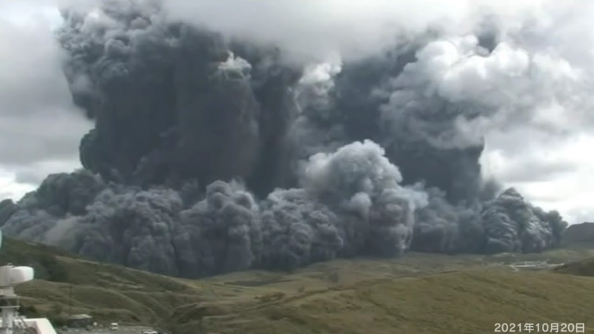

Вулкан Асо
Над обнажёнными стенами Накадакэ поднимаются вулканические газы; слои пород и меняющийся водоём на дне показывают жизнь действующего кратера.
🇯🇵 Показать местному
〒869-2225 熊本県阿蘇市黒川1808 阿蘇山上ターミナル（案内拠点）
Что этоДействующий кратер Накадакэ внутри большой кальдеры Асо.
ГлавноеОткрытые вулканические породы, газовые выбросы и глубина кратера.
Не пропуститеПолосы на стенах: следы последовательных извержений.
- Слоистые стенки — на противоположной стороне кратера, если их не скрывают газовые облака.
- Обнажённые лавовые породы — вокруг разрешённой смотровой зоны.
- Водоём на дне — если он присутствует и позволяет видимость; его состояние меняется.
- Перед выездом и на месте проверьте допуск к кратеру. Газ, ветер и вулканическая активность могут закрыть доступ в течение дня.
- При астме, заболеваниях бронхов или сердца и плохом самочувствии посещение кратера запрещено правилами оператора из-за вулканического газа.
- Оставайтесь в открытых для посетителей зонах и сразу выполняйте указания сотрудников. Возьмите защиту от ветра и устойчивую обувь.
- Карта и адрес ведут к терминалу Асо-Сандзё — месту, где уточняют доступ к кратеру. Проезд оплачивается отдельно от бесплатного осмотра.
История и подробности
Накадакэ встречает открытыми склонами, резкими уступами и стеной, словно разрезанной на горизонтальные полосы. В этой чаше хорошо видна работа вулкана: породы накапливались во время разных эпизодов активности, а затем оказались обнажены. Газовые облака могут закрыть дно и через несколько мгновений снова открыть часть стен. Поэтому фотография с прозрачным бирюзовым водоёмом передаёт лишь одно из возможных состояний места.
Асо — целая вулканическая система. Большая кальдера, то есть обширная впадина, связанная с обрушением после огромных извержений, вытянута примерно на 25 километров с севера на юг и на 18 с востока на запад. Её формирование связывают с четырьмя крупными извержениями между приблизительно 270 и 90 тысячами лет назад. Уже внутри этой впадины выросли более молодые вулканические горы. Накадакэ — одна из них; большая кальдера и видимый перед вами кратер относятся к разным масштабам и этапам истории Асо.
Накадакэ имеет семь кратеров, расположенных цепочкой почти с севера на юг. В историческое время центр активности перемещался между ними. Сейчас основной действующий участок — первый кратер. В сравнительно спокойные периоды в нём может накапливаться горячая, очень кислая вода. Её уровень и вид зависят от состояния вулкана: знакомое по фотографиям зелёное озеро нельзя считать постоянной частью пейзажа.
Для наблюдения важны и стены, и пустое пространство над чашей. Выделение газа продолжается даже тогда, когда нет зрелищного выброса пепла. Видимая дымка не позволяет оценить опасность по одному только внешнему виду, поэтому порядок допуска определяют службы наблюдения. Открытая площадка даёт возможность увидеть действующий вулкан близко при разрешённых условиях.
- Около 270–90 тысяч лет назад — четыре крупных извержения формируют большую кальдеру Асо.
- 1923–1930 — центром активности становится четвёртый кратер Накадакэ.
- 1932 — 4 сентября активность возвращается к первому кратеру.
- 2020 — начинается работа автобусного сообщения к кратеру взамен прежней канатной дороги, пострадавшей в 2016 году.